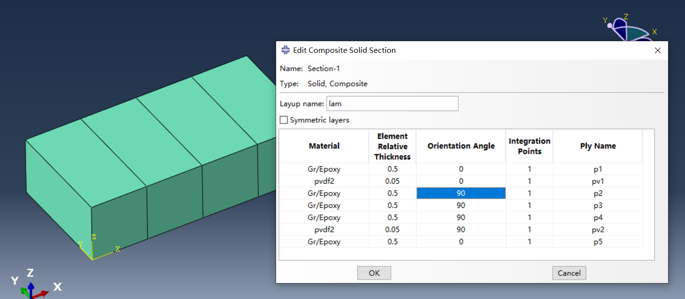

目录
Abaqus SolidSection关键字
介绍
*solid section 用来定义单元的材料属性,材料方向等信息,适用于: solid (continuum) elements; infinite elements; acoustic finite and infinite elements; particle elements; truss elements.
这个关键字的属性:
- Type : Model data;
- Level : Part,Part instance;
- Abaqus/CAE : Property module
一个简单例子

** Section: Section-1
*Solid Section, elset=Set-3, composite, orientation=Ori-1, layup=lam
0.5, 1, Gr/Epoxy, 0., p1
0.05, 1, pvdf2, 0., pv1
0.5, 1, Gr/Epoxy, 90., p2
0.5, 1, Gr/Epoxy, 90., p3
0.5, 1, Gr/Epoxy, 90., p4
0.05, 1, pvdf2, 90., pv2
0.5, 1, Gr/Epoxy, 0., p5data lines
format 1
define homogeneous solid elements, infinite elements, acoustic elements, particle, or truss elements
First (and only) line:
- Enter any attribute values required. The default for the first attribute is 1.0.
format 2
define a composite solid
First line:
- layer thickness(可以是单元相对厚度). 各层的thickness在求解时会自动调整,使所有layer thickness 之和==堆叠方向上的单元长度.
- Number of integration points , layer厚度上的积分点个数,必须是奇数,默认值1.0
- layer material name, 各层的材料名称.
- layer orientation, 各层的材料方向 , 可以是orien angle,也可以引用一个orientation, 或者一个orien distribution
- ply name,指定ply的名称,如果没有指定,则会自动生成ply名称.
重复first line, 直到所有层都定义完毕.如果SYMMETRIC参数出现,则只需要定义从底层到中面的层ply.
参数说明
必要的参数
elset: string, 单元集的名称, 例如：elset=Set-3composite: none, 该参数只能用于只有位移自由度的三维brick solid elements type.如果单元属于多层材料,则必须包含此参数.这个参数只对Abaqus/Standard analyses有效material: string, 材料名称, 例如：material=cfrp
The composute 和material参数不能同时出现,如果单元是均质材料就使用material,是多层材料就使用composite.
ref node: 该参数仅适用于广义平面应变单元和声学无限单元;对于所有其他元素类型,它将被忽略.将此参数设置为参考节点的节点号或包含参考节点的节点集的名称.如果选择了节点集的名称,则该节点集必须只包含一个节点, 例如：ref node=node_set-1orref node=Node-1
可选的参数
CONTROLS
这个参数用来指定SECTION SONTROLS.具体参见帮助文档
The SECTION CONTROLS option can be used to select the hourglass control and order of accuracy of the formulation for two- and three-dimensional solid elements and to select the kinematic formulation for 8-node brick elements.
LAYUP
这个参数需要和composite参数一起使用,Set this parameter equal to the name of a composite layup
ORDER
此参数只能用于Abaqus/Explicit中的声学无限单元.定义用于解析声场在无限方向上的变化的九阶多项式的个数,默认ORDER=10
STACK DIRECTION
此参数仅适用于Abaqus/Standard分析.只用于composite element.定义堆叠方向,默认STACK DIRECTION=3
SYMMETRIC
需要和composite参数一起使用,如果设置为SYMMETRIC,则只需要定义从底层到中面的层ply.
This parameter cannot be used if spatially varying orientation angles are defined on any composite layer using distributions
定义各向异性材料必须的参数
对于isotropic ,是可选的
orientation: string, 材料方向,这个参数用来定义单元局部材料坐标., 例如：orientation=Ori-1
For a composite solid ,orientation 选项+ orientation angle 一起定义了laminate 中ply的材料方向
此外,也可以直接在data line中引用orientation 来定义layer 方向.此时orientation参数指定的材料方向将被忽略,其他layer如果没指定angle,或引用orienation,则会使用orientaion参数作为该layer的方向.即默认为0度
*Orientation, name=Ori-1
1., 0., 0., 0., 1., 0.
1, 0.
*Orientation, name=Ori-2
0., 0.161320529915925, 0.986902065368011, 0., 0.986902065368011, -0.161320529915925
1, 0.
** Section: Section-1
*Solid Section, elset=Set-3, composite, orientation=Ori-1, layup=lam
0.5, 1, Gr/Epoxy, Ori-2, p1
0.05, 1, pvdf2, 0., pv1
0.5, 1, Gr/Epoxy, 90., p2
0.5, 1, Gr/Epoxy, 90., p3
0.5, 1, Gr/Epoxy, 90., p4
0.05, 1, pvdf2, 90., pv2
0.5, 1, Gr/Epoxy, 0., p5在dat文件中会warning:
***WARNING: A SECTION ORIENTATION AND LAYER ORIENTATION HAS BEEN SPECIFIED.
THE SECTION ORIENTATION WILL BE IGNORED.
LINE IMAGE: 0.5, 1, GR/EPOXY, ASSEMBLY_PART-1-1_ORI-2, P1Inp文件模板
*Heading
** Job name: Job-1 Model name: Model-1
** Generated by: Abaqus/CAE 2020
*Preprint, echo=NO, model=NO, history=NO, contact=NO
**
** PARTS
**
*Part, name=Part-1
*Node
1, 10., 0.425000012, 2.5999999
2, 10., -4.57499981, 2.5999999
3, 10., 0.425000012, 0.
4, 10., -4.57499981, 0.
5, 7.5, 0.425000012, 2.5999999
6, 7.5, -4.57499981, 2.5999999
7, 7.5, 0.425000012, 0.
8, 7.5, -4.57499981, 0.
9, 5., 0.425000012, 2.5999999
10, 5., -4.57499981, 2.5999999
11, 5., 0.425000012, 0.
12, 5., -4.57499981, 0.
13, 2.5, 0.425000012, 2.5999999
14, 2.5, -4.57499981, 2.5999999
15, 2.5, 0.425000012, 0.
16, 2.5, -4.57499981, 0.
17, 0., 0.425000012, 2.5999999
18, 0., -4.57499981, 2.5999999
19, 0., 0.425000012, 0.
20, 0., -4.57499981, 0.
*Element, type=CSS8
1, 7, 8, 4, 3, 5, 6, 2, 1
2, 11, 12, 8, 7, 9, 10, 6, 5
3, 15, 16, 12, 11, 13, 14, 10, 9
4, 19, 20, 16, 15, 17, 18, 14, 13
*Nset, nset="Edge Seeds-1", generate
1, 20, 1
*Elset, elset="Edge Seeds-1", generate
1, 4, 1
*Nset, nset=Set-3, generate
1, 20, 1
*Elset, elset=Set-3, generate
1, 4, 1
*Orientation, name=Ori-1
1., 0., 0., 0., 1., 0.
1, 0.
*Orientation, name=Ori-2
0., 0.161320529915925, 0.986902065368011, 0., 0.986902065368011, -0.161320529915925
1, 0.
** Section: Section-1
*Solid Section, elset=Set-3, composite, orientation=Ori-1, layup=lam
0.5, 1, Gr/Epoxy, Ori-2, p1
0.05, 1, pvdf2, 0., pv1
0.5, 1, Gr/Epoxy, 90., p2
0.5, 1, Gr/Epoxy, 90., p3
0.5, 1, Gr/Epoxy, 90., p4
0.05, 1, pvdf2, 90., pv2
0.5, 1, Gr/Epoxy, 0., p5
*End Part
**
**
** ASSEMBLY
**
*Assembly, name=Assembly
**
*Instance, name=Part-1-1, part=Part-1
*End Instance
**
*Nset, nset=Set-2, instance=Part-1-1
3, 4, 7, 8, 11, 12, 15, 16, 19, 20
*Elset, elset=Set-2, instance=Part-1-1, generate
1, 4, 1
*Nset, nset=Set-fix, instance=Part-1-1, generate
17, 20, 1
*Elset, elset=Set-fix, instance=Part-1-1
4,
*End Assembly
**
** MATERIALS
**
** si-mm,Gr/Epoxy
*Material, name=Gr/Epoxy
*Density
1.578e-09,
*Elastic, type=ENGINEERING CONSTANTS
132400.,10800.,10800., 0.24, 0.24, 0.49, 5600., 5600.
3600.,
** si-mm
*Material, name=pvdf2
*Density
1.8e-09,
*Dielectric
228.568,
*Elastic
10000., 0.3
*Piezoelectric, type=E
0., 0., 0., 0., 0., 0., 0., 0.
0., 0., 0., 0., -1.8e-11, 0., 3e-11, 0.
0., 0.
**
** BOUNDARY CONDITIONS
**
** Name: BC-2 Type: Electric potential
*Boundary
Set-2, 9, 9
** ----------------------------------------------------------------
**
** STEP: Step-1
**
*Step, name=Step-1, nlgeom=NO, perturbation
*Frequency, eigensolver=Lanczos, sim, acoustic coupling=on, normalization=mass
15, , , , ,
**
** BOUNDARY CONDITIONS
**
** Name: BC-1 Type: Displacement/Rotation
*Boundary
Set-fix, 1, 1
Set-fix, 2, 2
Set-fix, 3, 3
Set-fix, 4, 4
Set-fix, 5, 5
Set-fix, 6, 6
**
** OUTPUT REQUESTS
**
*Restart, write, frequency=0
**
** FIELD OUTPUT: F-Output-1
**
*Output, field
*Node Output
EPOT, U
*Element Output, directions=YES
1, 2, 3, 4, 5, 6, 7
E, ELEDEN, ELEN, ENER, EVOL, S
*End Step